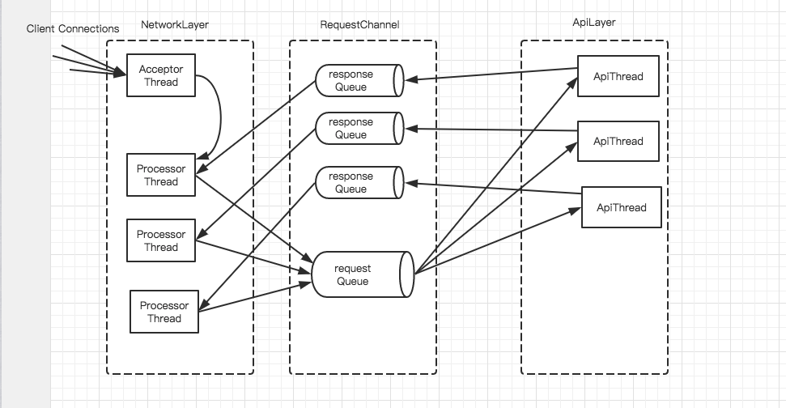

Kafka 服务端 网络层 架构
1，Reactor 模式
Kafka 网络层采用的是Reactor模式，是一种基于事件驱动模式。对应于Java的NIO 提供了Reactor模式的API.常见的单线程Java NIO 的线程模型为
流程：
首先创建ServerSocketChannel 对象并在Selector 上注册OP_ACCEPT 事件，ServerSockeChannel 负责监听指定网络端口上的连接请求。
当客户端发起到服务端的网络连接时，服务端的Selector监听到此OP_ACCEPT事件，会触发Acceptor 来处理OP_ACCEPT。
当Acceptor 收到来自客户端的Socket 连接请求时会为这个练剑创建相应的SocketChannel,将SocketChannel 设置为非阻塞模式，并在Selector上注册其关注的I/O事件，例如OP_READ OP_WRITE .此时客户端服务端之间socket 连接正式建立完成
当客户端通过上面建立的socket连接向服务端发送请求时，服务端的selector 会监听到OP_READ事件，并触发执行相应处理逻辑（上图的ReaderHandler）
这里的所有事件处理逻辑都是在同一线程中完成的，这种设计适合并发连接数较小，数据量较小的场景，对于服务端来说就有些缺点，例如某请求的处理过程比较复杂会造成线程阻塞，那么所有后续
请求无法被处理，就会导致大量的请求超时。为了避免这种情况，要求服务端在读取请求，处理请求已经发送响应等各个环节迅速完成。为了解决这种问题，服务端引入了多线程来满足高并发的需求。将网络读写逻辑与业务处理逻辑进行拆分，让其由不同的线程池来处理，从而实现多线程处理。
Acceptor 单独运行在一个线程中，也可以使用单线程的ExecutorService 实现，因为ExecutorService 会在线程异常退出时，创建新的线程进行补偿，所以可以防止出现线程异常退出后整个服务端不能接收请求
的异常情况。ReaderThreadPool 线程池中的所有线程都会在Selector 上注册OP_READ 事件，负责服务端读取请求逻辑，当然也是一个线程对应多个socket 连接。ReaderThreadPool中的线程成功读取请求过后,
将请求组放入MessageQueue这个共享队列之中，HandlerTreadPool 线程池中的线程会从MessageQueue 取出请求，然后执行业务逻辑请求处理。在中模式下，即使摸个业务请求的线程阻塞了，池中还有其他线程继续从
MessageQueue 中获取请求并进行处理，从而避免整个服务端阻塞。Handler 线程还负责产生响应并发送给客户端，这就要求Handler ThreadPool 中的线程在Selector 中注册OP_WRITE 事件，实现发送响应的功能。
同时这里需要注意，当读取与处理的速度不配时候，MessageQueue 的队列长度尤为重要。
一般情况，Acceptor 单独占用一个Selector.当AcceptorSelector 监听到OP_ACCEPT时，会创建个相应的socketchannel ,使用一定的策略例如轮休 selector 集合或者选择最少的selector 让不同的连接不同的selector上
注册I/0事件，之后就有此Selector 负责监听此socketchannel 上的事件
2,SocketServer-kafka
1,kafka 的网络层采用的是多线程，多个selector 的设计实现的。核心类是SocketServer，其中包含一个Acceptor 用于接受并处理所有的新连接，每个Acceptor对应多个Processor线程，每个Processor线程拥有自己的Selector,主要用于
从连接中读取请求和写回响应。每个Acceptor对多个Handler线程，主要用于处理请求并将产生响应返回Processor线程。Processor 线程与Handler 线程之间通过RequestChannel 进行通讯。
